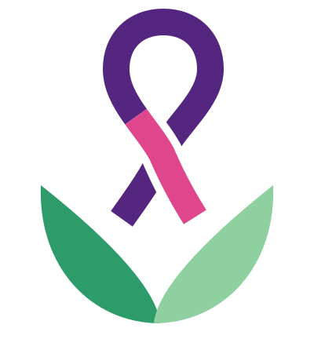

Irrevocable & non-profit
Trust assets cannot revert to the settlor or any individual. On dissolution, remaining funds go to a charity with similar objects.

Home / About us
We are a charitable trust bringing HPV screening, same-day treatment and honest information to the women cervical cancer reaches first.
Provision of free HPV E6/E7 Oncoprotein screening and point of care while empowering women with knowledge and support.
Where every girl is vaccinated, every woman is screened, and every patient receives compassionate, timely care.
The Trust was founded by Dr. Bruce Semo, who worked in collaboration with Dr. Claudia Mason. It is an irrevocable charitable trust registered under the Trustees (Perpetual Succession) Act, Cap. 164 of the Laws of Kenya.
Founded the Trust to put accurate, point-of-care HPV screening and same-day treatment within reach of women who are usually left out.
Worked in collaboration with our founder and continues to offer international collaboration and advice.
We value secrecy in the way a clinic should. What a woman tells us, and what her test shows, is shared only with the people involved in her care.
Every woman is treated with respect, whatever her work, her story or her status.
We do not support or oppose any political party or candidate. Our only side is women’s health.
Rapid, point-of-care testing and a mobile clinic mean women don’t have to travel far or wait long for answers.
Where possible, a woman who needs treatment is treated the same day — and otherwise linked straight to further investigation.
Plain, accurate answers about HPV, vaccination and screening, so that fear and myth don’t cost lives.
Your details and results are used only to care for you. They are not shared with employers, family, partners or anyone else without your permission. You choose what you tell us.
The Trust is independent of every political party. Our partnerships are about care, never about politics.
The Trust is managed by a board of not fewer than three and not more than six trustees. Current trustees:
Trust assets cannot revert to the settlor or any individual. On dissolution, remaining funds go to a charity with similar objects.
No more than 10% of trust assets may be used for operating expenses, and large expenditures need a special resolution of the board.
No trustee may vote on a matter in which they have a personal interest, and every disclosure is recorded in writing.
Become a partner, volunteer or supporter and help us reach the next woman.